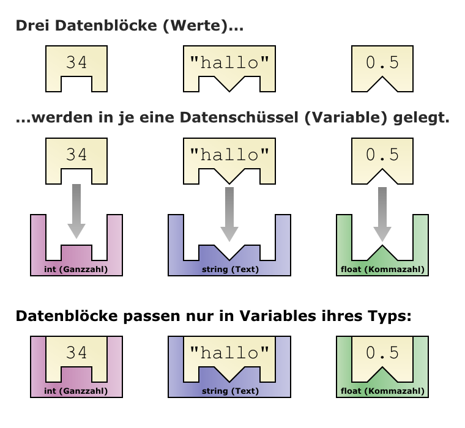
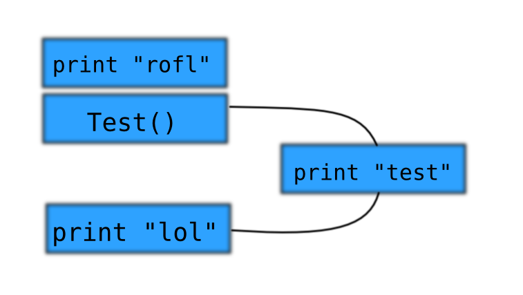
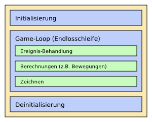
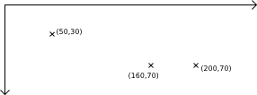
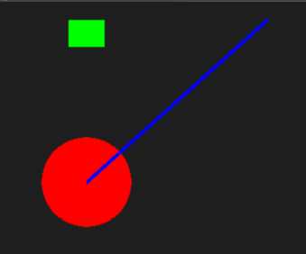

Python
Python ist eine einfache Programmiersprache, die sich sowohl an Anfänger als auch erfahrene Programmierer richtet. Mit ihr lassen sich einfache Programme (sogennante Skripte) wie auch komplexe Software schreiben. Auf python.org lässt sich eine vollkommen freie Entwicklungsumgebung herunterladen. In diesem Kurs wird die Version 2.6 von python.org eingesetzt. Jeder ist herzlich dazu eingeladen, bei sich zu Hause Python zu installieren und die Beispiele im Kurs sowieso in dieser Referenz nachzuvollziehen.
Für Grafik wird zusätzlich noch Pygame von pygame.org benötigt. Auch dieses lässt sich vollkommen frei herunterladen und einsetzen. Im Kurs wird die Version 1.9 von Pygame eingesetzt.
Variablen
Das Wichtigste in einem Computer sind Daten. Alles, was der Computer weiß, sind Daten (alle Bilder, alle Musik, alle Spiele, alle Programme). Mit Daten lässt sich arbeiten, indem man kleine Teile von ihnen in sogenannten Variablen speichert. Genauer gesagt kann man in Variablen Werte speichern.
var1 = 10 # Speichert Ganzzahl 10 in Variable var1 var2 = 5.5 # Speichert Kommazahl 5.5 in Variable var2 var3 = "hallo" # Speichert String "hallo" in Variable var3 var4 = True # Speichert Wahrheitswert True in Variable var4 mein_ergebnis = var1 + var2 # Speichert Summe von var1 und var2 in Variable mein_ergebnis
Die vier Hauptdatentypen in Python sind: Ganzzahlen, Kommazahlen, Strings und Wahrheitswerte. Alle modernen Spiele und Anwendungen funktionieren prinzipiell auf Basis dieser Datentypen.
Behälter
Es gibt in Python drei Arten von Behältern: Lists, Tuples und Dicts. Lists sind wie Einkaufslisten, auf die man nach Belieben Einträge hinzufügen oder entfernen kann. Tuples sind wie Lists, nur können sie nur einmalig erstellt, aber nicht verändert werden können. Dicts sind etwas komplizierter. Sie ordnen einen Wert einem anderen zu wie in einem Wörterbuch.
list1 = [5, 3] # Erstellt eine List list1 mit den Ganzzahlen 5 und 3. print list1[0] # Gibt 5 aus der List list1 aus (0ter Eintrag). list1.append(6) # Fügt die Ganzzahl 6 an das Ende der List list1 an. print list1 # Gibt aus: [5, 3, 6] list1[1] = 61 # Überschreibt Wert der List list1 an Stelle 1 mit der Ganzzahl 61. print list1 # Gibt aus: [5, 61, 6] list1.pop(1) # Löscht Wert an Position 1 der List print list1 # Gibt aus: [5, 6]
Kommentare
Besonders wichtig beim Programmieren ist das Verständnis für den Programmcode. Hierbei gibt es die Möglichkeit, seinen Code mittels sogenannter Kommentare zu dokumentieren. Dies ist in Python über die Raute # möglich. Genau dieses wurde übrigens oben schon überall im Code verwendet, um die Ausgaben direkt in den Code zu schreiben.
Kommentare werden nicht ausgeführt. Alles was hinter der Raute steht, ist dem Programm vollkommen egal, dem Programmierer aber nicht. Durch Kommentare wird das Programm sehr viel einfacher verständlich.
zahl1 = 5 zahl2 = 10 # Überprüfe, ob zahl1 größer zahl2 if zahl1 > zahl2: print "ist größer"
Logik
Mit Hilfe von Logik lassen sich Bedingungen überprüfen. Solche Bedingungen können sein Abfragen sein: Ist A größer B? Anhand des Ergebnisses, welches entweder wahr oder falsch ist, lässt sich eine Aktion durchführen: Wenn A größer B ist, setze A gleich 5.
a = 3 b = 9 print a > b # Ausgabe ist: False if a != b: # Wenn a ungleich b, dann... print "ist ungleich!"
Logik lässt sich mit den folgenden Operatoren durchführen: < (kleiner als), > (größer als), == (gleich), != (ungleich), <= (kleiner gleich), >= (größer gleich). Weiterhin gibt es die Möglichkeit, logische Ausdrücke zu verknüpfen.
c = 9 d = 3 e = 10 if c > d and e > d: # Wenn c größer d ist und gleichzeitig e größer d ist dann... print "beides ist größer als d!"
Mit den folgenden Schlüsselworten lassen sich logische Ausdrücke verknüpfen: and (beide Bedingungen müssen wahr sein), or (eine der Bedingungen muss wahr sein, not (kehrt den Wahrheitswert eines Ausdruckes um).
Schleifen
Sogenannte Schleifen dienen dazu, den Verlauf eines Programmes so zu verändern, dass ein Befehl mehrere Male hintereinander mit anderen Daten ausgeführt werden kann.
while Bedingung: Tu dies Tu das a = 1 while a < 10: # Führe die folgenden Befehle aus, solange a kleiner als 10 ist print a # a ausgeben a = a + 1 # a um 1 erhöhen # Ausgabe wäre: 1 2 3 4 5 6 7 8 9 -> Dann wird die Schleife unterbrochen, # da die Bedingung (a < 10) nicht mehr erfüllt ist b = [1, 5, 4, 9] for c in b: # Durchläuft die Liste b; Bei jedem Durchlauf heißt das jeweilige Element c print c # c ausgeben # Ausgabe wäre: 1 5 4 9 -> ganze Liste durchlaufen
Funktionen
Funktionen sind dazu da um Code, den man mehr als einmal braucht, einmal an eine Stelle im Programm zu schreiben. Eine solche Funktion kann dann an einer anderen Stelle aufgerufen werden.
def print_lol():
print "lol"
Damit man nun nicht überall im Programm 'print "lol"' schreiben muss, ruft man die Funktion einfach mit print_lol() auf.
def print_lol():
print "lol"
print_lol() # Ausgabe: lol
# Tu irgendwas anderes
print_lol() # Ausgabe: lol

Parameter
Wenn jetzt in einer Funktion etwas Anderes getan werden soll als lol auszugeben, zum Beispiel eine Rechnung durchzufüren oder einen beliebigen Text auszugeben macht man dies so:
def addiereUndGibAus(a, b):
print (a + b)
i = 5
addiereUndGibAus(i, 7) # Ausgabe: 12
# ---------------------------------------------------
def addiere(a, b):
return (a + b)
i = addiere(2, 5)
print i # Ausgabe: 7
Die Variablen a und b sind nur in den Fuktionen vorhanden, außerhalb können sie nicht genutzt werden.
Klassen
Klassen sind dazu da, ein Objekt zu definieren, welches bestimmte Eigenschaften hat und bestimmte Fähigkeiten hat. Als Beispiel nehmen wir einen Mitarbeiter in einer Firma. Dieser Mitarbeiter hat einen Namen, ein Alter und ein Gehalt. In Python sähe das dann so aus:
class Mitarbeiter:
def __init__(self, Name, Alter, Gehalt):
self.Gehalt = Gehalt
self.Name = Name
self.Alter = Alter
Dies ist sozusagen die Definition, wie ein Mitarbeiter aufgebaut ist. Die __init__() Funktion wird aufgerufen, wenn ein Objekt
erstellt wird. Man spricht auch vom Instanzieren des Objekts. Die Variablen in den Klammern werden der Funktion übergeben.
Darunter wird jeweils eine Variable der entsprechenden Member-Variable übergeben. Member-Variablen gehören zum Objekt und sind
desssen Eigenschaften. Man schreibt Member-Variablen mit einem führenden "self.". Das "self" steht für das Objekt selbst.
class Mitarbeiter:
def __init__(self, Name, Alter, Gehalt):
self.Gehalt = Gehalt
self.Name = Name
self.Alter = Alter
Tim = Mitarbeiter("Tim Testmensch", 25, 1800)
print "Tim verdient " +Tim.Gehalt + " Euro"
# Ausgabe: Tim verdient 1800 Euro
print "Tim heißt" + Tim.Name
# Ausgabe: Tim heißt Tim Testmensch
print "Tim ist " + Tim.Alter + " Jahre alt"
# Ausgabe: Tim is 25 Jahre alt
Tim kann auch bestimmte Sachen tun. Zum Beispiel kann er ein Jahr älter werden, oder mehr Gehalt bekommen.
Als erster Parameter der jeweiligen Funktion wird immer "self" übergeben, wie wir es schon in der "__init__()" Funktion gesehen haben.
class Mitarbeiter:
def __init__(self, Name, Alter, Gehalt):
self.Gehalt = Gehalt
self.Name = Name
self.Alter = Alter
def geburtstag(self):
# self.Alter um 1 erhöhen (ein Jahr älter werden)
self.Alter += 1
def neues_gehalt(self, Gehalt):
# Altes Gehalt mit neuem Gehalt überschreiben
self.Gehalt = Gehalt
Tim = Mitarbeiter("Tim Testmensch", 25, 1800)
print "Tim ist " + Tim.Alter + " Jahre alt"
# Ausgabe: Tim ist 25 Jahre alt
Tim.geburtstag()
print "Oh, Tim hat heute Geburtstag!! Er ist jetzt " + Tim.Alter + " Jahre alt :D"
# Ausgabe: Oh, Tim hat heute Geburtstag!! Er ist jetzt 26 Jahre alt :D
Tim.neues_gehalt(2500)
print "Tim bekommt jetzt " + Tim.Gehalt + " Euro :D"
# Ausgabe: Tim bekommt jetzt 2500 Euro :D
Die Funktionen, auch Methoden genannt, funktionieren im Objekt wie ganz normale Funktionen. Sie können aber auf die Elemente
des Objekts mittels self zugreifen. Allerdings haben sie keine Zugriff auf Variablen, die außerhalb definiert wurden.
Das Gleiche gilt für ganz normale Funktionen. So können auch Namen doppelt verwendet werden, was aber nicht sehr klug ist,
weil mann dann sehr leicht durcheinander kommt. Ein Beispiel
class Mitarbeiter:
def __init__(self, a):
self.a = Name
def Beispiel(self, a):
print self.a
print a
Tim = Mitarbeiter(5)
a = 1 # eine weitere Variable mit dem Namen a
Tim.Beispiel(3) # Ausgabe wäre: 5 3 ; Das außenstehende a wird gar nicht beachtet.
Pygame
Mit Hilfe von Pygame kann man in Python relativ einfach Spiele schreiben. Pygame hilft einem zum Beispiel dabei, Grafiken anzuzeigen.
Grundaufbau
Der Grundaufbau eines Programmes sieht immer gleich aus:
In der Initialisierung wird das Programm gestartet, das Spielfenster erstellt und eventuell ein paar Objekte instanziert.
Die Game-Loop ist eine Endlosschleife, die immer wieder auf Benutzereingaben prüft (Ereignis-Behandlung), Berechnungen wie z.B. Bewegungen von Objekten durchführt und danach eine Momentaufnahme des Spielfeldes zeichnet. Eine solche Momentaufnahme heißt Frame. Einfache Spiele laufen oft bei 60 FPS (Frames pro Sekunde), das heißt die Game-Loop wird 60 mal in einer Sekunde durchlaufen. Mehr dazu ist unter Timing zu finden.
Zum Schluss erfolgt die Deinitialisierung, im Prinzip wird dabei nur das Fenster geschlossen.
# Pygame muss importiert werden, um es zu nutzen
import pygame
# INITIALISIERUNG
pygame.init() # Pygame initialisieren (starten)
screen = pygame.display.set_mode((600,400)) # Fenster erstellen, Größe: 600 x 400 px
quadrat = pygame.Surface((20,20)) # Als Beispiel ein grünes Quadrat erstellen
quadrat.fill((0,200,0))
running = True # in running wird gespeichert, ob das Programm läuft
# GAME LOOP
while running:
# EREIGNIS-BEHANDLUNG
for event in pygame.event.get():
if event.type == pygame.QUIT: # Wenn das Programm geschlossen wird:
running = False
if event.type == pygame.KEYDOWN: # Wenn eine Taste gedrückt wird
if event.key == pygame.KESCAPE: # Wenn die Taste "Escape" ist
running = False
# BERECHNUNGEN
# Hier müsste gerechnet werden
# dies ist in diesem Beispiel unnötig
# ZEICHNEN
screen.fill((0,0,0)) # Altes Bild mit schwarz übermalen
screen.blit(quadrat, (100,100)) # Das Beispiel-Quadrat zeichnen
# Das gezeichnete Bild anzeigen
pygame.display.flip()
# Das Programm beenden
pygame.quit()
Ereignisse
Damit der Spieler das Spiel auch steuern kann, müssen Eingaben des Benutzers an das Programm weitergegeben werden. Für jede Art von Eingabe wird dabei ein Ereignis (engl. event) erstellt. Dazu zählen Tastendrücke, Mausklicks oder auch das Schließen des Spielfensters.
Bei jedem Schleifendurchlauf der Hauptschleife werden für die Ereignisbehandlung alle Ereignisse seit dem letzten Durchlauf von pygame abgefragt und nacheinander abgearbeitet.
Zuerst wird geprüft, um was für einen Ereignistyp es sich handelt (Tastendruck, Mausklick, etc.) Danach können noch weitere Abfragen folgen, z.B. welche Taste gedrückt wurde...
# Ereignisliste abfragen
event_list = pygame.event.get();
# jedes Ereignis in einer Schleife abarbeiten:
for event in event_list:
# Den Ereignistyp herausfinden
if event.type == pygame.QUIT: # Fenster wurde geschlossen
# ...
if event.type == pygame.KEYDOWN: # Taste wurde gedrückt
# Die Taste abfragen
if event.key == pygame.K_a:
# Die Taste "A" wurde gedrückt
# ...
elif event.key == pygame.K_ESCAPE:
# Die Taste "Esc" wurde gedrückt
# ...
if event.type == pygame.MOUSEBUTTONDOWN: # Maus wurde geklickt
# Mausposition ausgeben
print event.pos
Folgende Werte kann event.type annehmen:
- Programm geschlossen: QUIT
- Tastendruck: KEYDOWN
- Taste loslassen: KEYUP
- Maus bewegen: MOUSEMOTION
- Mausklick: MOUSEBUTTONDOWN
- Mausloslassen: MOUSEBUTTONUP
Folgende Werte kann event.key annehmen:
- Buchstaben: K_a, K_b, ..., K_z
- Zahlen: K_0, K_1, ..., K_9
- Zahlen am Ziffernblock: K_KP0, K_KP1, ..., K_KP9
- Funktionstasten: K_F1, K_F2, ..., K_F12
- Pfeiltasten: K_LEFT, K_UP, K_RIGHT, K_DOWN
- Sonstige: K_ESCAPE, K_ENTER, K_SPACE (Leerzeichen)
Grafiken und Zeichnen
Koordinaten
In der Spieleprogrammierung werden Punktkoordinaten anders als in der Mathematik von der oberen linken Ecke des Fensters aus gesehen. Die x-Achse führt nach rechts, die y-Achse nach unten.
Farben
Um in pygame Formen oder Text zu zeichnen, muss man eine Farbe angeben. Dazu wird ein Tupel mit 3 Werten benötigt. Diese Werte geben die Licht-Anteile an Rot, Grün und Blau in der Farbe an. Die Werte sind Ganzzahlen im Bereich von 0 bis 255.
# Ein paar Beispiele:
rot = (255,0,0) # Nur rotes Licht
weiss = (255,255,255) # So viel Licht wie möglich
gruen = (0,128,0) # Etwas grünes Licht (nicht zu viel, sonst wird es neon-grün)
blau = (0,0,200) # Nur blaues Licht
gelb = (255,255,0) # Rotes und grünes Licht zusammen ergeben Gelb
orange = (255,255,128) # Gelbes und etwas blaues Licht zusammen ergeben Orange
pink = (255,0,255) # Rotes und blaues Licht
schwarz = (0,0,0) # Kein Licht = Schwarz... logisch oder?
Surfaces
Surfaces sind so etwas wie Zeichenflächen. Ein Surface kann also bemalt werden, entweder mit einfachen Formen oder mit Bildern aus Dateien. Man kann auch ein Surface manuell erstellen und vollständig mit einer Farbe füllen. Surfaces sind dabei immer rechteckig, können aber unsichtbare Pixel enthalten. Dadurch kann ein Surface auch z.B. einen Kreis darstellen.
# Surface erstellen (100 Pixel breit, 50 Pixel hoch)
flaeche = pygame.Surface((100,50))
# die Fläche mit pinker Farbe ausfüllen
flaeche.fill((255,0,255))
# jetzt haben wir ein pinkes Rechteck der Größe 100 x 50 Pixel
Blit
Auch das Spiel-Fenster an sich ist ein Surface. Will man darauf malen, erstellt man ein weiteres Surface, bemalt dieses (z.B. mit einer Grafik aus einer Datei) und "stempelt" das Grafik-Surface auf das Fenster-Surface. Dieser Vorgang heißt "blit".
# INITIALISIERUNG
screen = pygame.display.set_mode((400,300)) # Spiel-Fenster erstellen
flaeche = pygame.Surface((100,50)) # Surface erstellen
flaeche.fill((160,0,0)) # Surface füllen mit Dunkelrot
# ...
while running:
# EREIGNIS-BEHANDLUNG
# ...
# BERECHNUNGEN
# ...
# ZEICHNEN
screen.fill((0,0,0)) # das Alte Bild mit Schwarz übermalen
screen.blit(flaeche, (20,40)) # die Fläche an Position (20,40) auf den
# Screen (das Fenster) stempeln
pygame.display.flip() # Das gezeichnete Bild anzeigen
# DEINITIALISIERUNG
# ...
Die letzte Zeile pygame.display.flip() ist wichtig, da dadurch erst das auf screen gezeichnete Bild angezeigt wird. Vergisst man diese Zeile, bleibt der Bildschirm schwarz.
Einfache Formen
Einfache Formen lassen sich relativ einfach mit Hilfe von pygame.draw malen.
# Einen roten Kreis auf screen malen mit Mittelpunkt (100|200) und Radius 50 Pixel
pygame.draw.circle(screen, (255,0,0) , (100,200), 50)
# Ein grünes Rechteck auf screen malen mit oberer linker Ecke an Position (80|20),
# 40 Pixel breit und 30 Pixel hoch.
pygame.draw.rect(screen, (0,255,0), (80,20,40,30) )
# Eine 5 Pixel breite blaue Linie zeichnen, von Position (300|20) nach (100|200)
pygame.draw.line(screen, (0,0,255), (300,20), (100,200), 5)
Dieser Code erzeugt eine solche Ausgabe:
Bilder laden
Dank Pygame ist es relativ einfach aus Bilddateien Grafiken in ein Surface zu laden.
bild = pygame.image.load("pfad/zur/datei.png")
while running:
# ...
screen.blit(bild, (10,10))
# ...
# ...
Der Pfad zur Datei geht dabei entweder von der Script-Datei aus (z.B. "grafiken/figur.png") oder als absoluter Pfad von einem Wurzel-/ Laufwerksverzeichnis (z.B. "C:/ordner/unterordner/datei.png")
Textausgabe
Die Textausgabe mit Pygame ist ein wenig komplizierter. Zuerst muss die Schriftart geladen werden. Dann muss ein Surface mit dem gewünschten Text erstellt und dieses danach auf das Fenster gestempelt werden.
# Schriftart "Arial" laden, 12 pt groß, Fett (da True) aber nicht Kursiv (da False)
schriftart = pygame.font.SysFont("Arial",12,True,False)
while running:
# ...
# Text-Surface erstellen - Schriftfarbe weiß
surf = schriftart.render("Ich wollte nur mal schnell Hallo sagen!", True, (255,255,255))
# Textsurface auf Fenstersurface an Position (100|100) stempeln
screen.blit(surf, (100,100))
# ...
# ...
Bewegungen
Spannend werden Spiele erst, wenn sich Dinge bewegen. Hierzu muss man sich einfach die Koordinaten des Objektes in einer Variable merken und diese Variable in jedem Frame ein bisschen verändern. Das Surface wird dann an diese Stelle gestempelt. Da das Auge ab etwa 20 Frames pro Sekunde zu langsam ist um die einzelnen Bilder zu sehen, erscheint das Objekt wie bewegt.
# ...
posX = 10
# ...
while running:
# ...
# BERECHNUNGEN
posX = posX + 5
# ZEICHNEN
screen.blit(meinSurface, (posX, 20))
#...
Timing
Bei der Spieleprogrammierung ist gutes Timing besonders wichtig. Es ist ungünstig, wenn ein Spiel, bei welchem es auf gute Reaktionszeiten ankommt, auf einem hochwertigen Computer doppelt so schnell läuft wie auf einem anderen. Hierfür gibt es zwei Möglichkeiten, die Geschwindigkeit zu steuern:
Framerate begrenzen
Pygame bietet die Möglichkeit, relativ einfach die Framerate (FPS) auf einen gewünschten Wert zu begrenzen. Das bedeutet zwar, dass das Spiel auf einem viel zu alten und langsamen Computer zu langsam laufen kann, allerdings wird es nie zu schnell laufen, da einfach mit dem nächsten Frame gewartet wird.
# ...
timer = pygame.time.Clock() # Uhr erstellen
FPS = 60 # Framerate merken in Variable "FPS"
#...
while running:
# AM ANFANG DER SCHLEIFE!
timer.tick(FPS)
#...
Zeit als Faktor
Die kompliziertere, aber auch bei langsamen Computern bessere Methode, ist die seit dem letzten Frame verstrichene Zeit als Faktor zur Geschwindigkeit zu multiplizieren.
# ...
timer = pygame.time.Clock() # Uhr erstellen
#...
while running:
# Die seit dem letzten Frame verstrichene Zeit merken
timeDiff = timer.tick() # die Zeit ist in Millisekunden (Tausendstel Sekunden) angegeben
timeDiff = timeDiff * 1000.0 # die Zeit ist nun in Sekunden angegeben
# BERECHNUNGEN
posX = posX + ( 100 * timeDiff) # auf posX werden pro Sekunde 100 Pixel addiert
# statt:
# posX = posX + 100 # auf posX werden pro Frame 100 Pixel addiert
#...
Der Unterschied ist hierbei, dass nicht pro Frame ein bestimmter Wert auf die Koordinate addiert wird, sonder pro Sekunde. Dies ist nötig, da ein Frame nicht immer gleich lang ist. Eine Sekunde ist erfüllt diese Voraussetzung.
Beispiele
Bounce
lol = "rofl" print lol